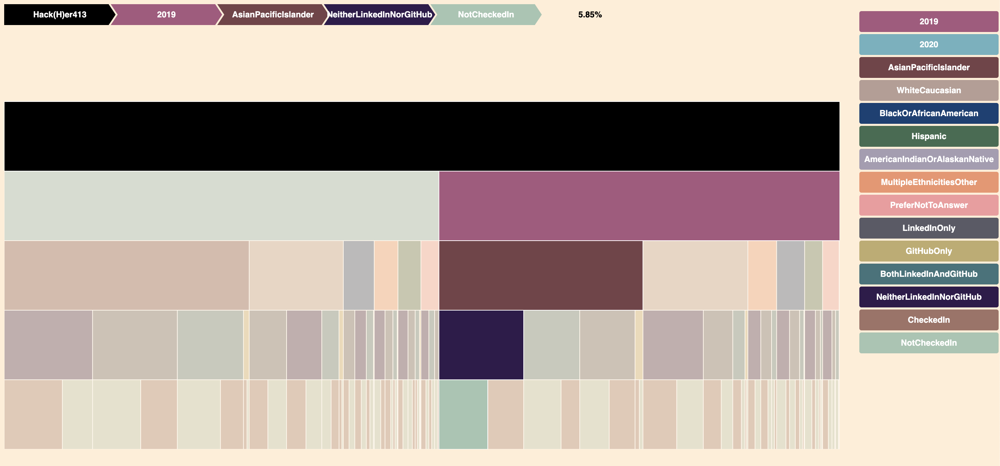
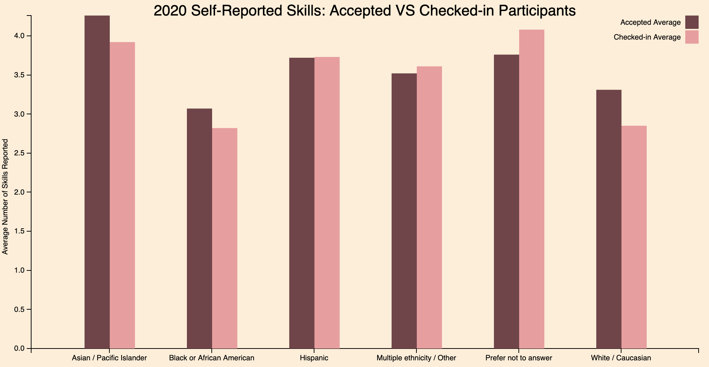
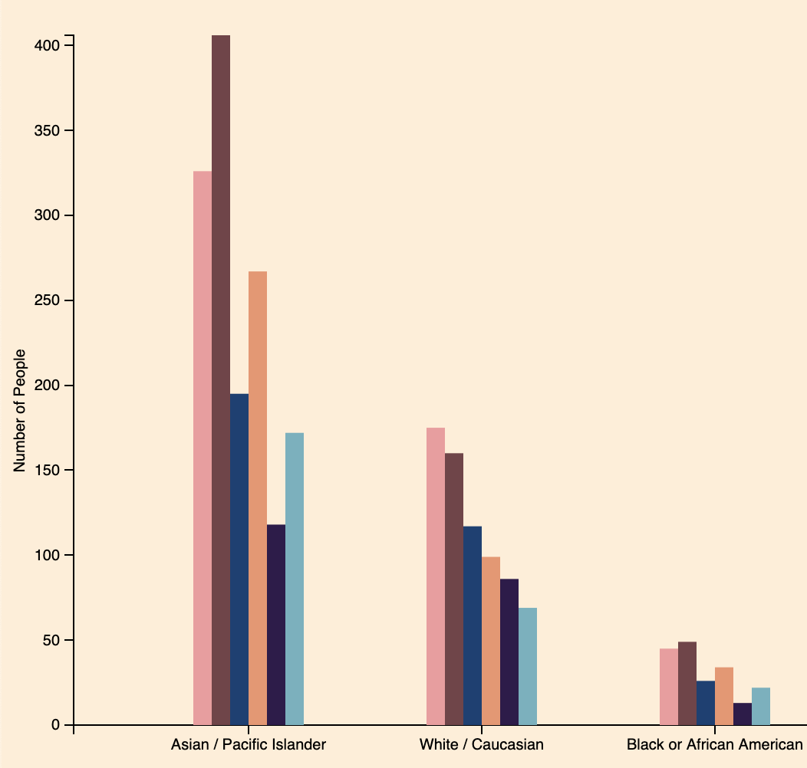

Professional Networking
-

This visualization demonstrates the breakdown of accepted and checked-in attendees in regards to their use of professional networking platforms. This data is further broken down by ethnicity. This icicle chart helps diversity specialists to determine if students are being fully supported in their efforts to connect with industry professionals, which is something that a hackathon could help to rectify. Click on the image to see the visualization.
Self-Reported Skills
-

This visualization demonstrates the average number of reported skills of applicants next to the average number of reported skills by checked-in attendees. These averages are broken down by ethnicity. This was done to determine if any group self-reported more skills than another group. This also allows Diversity Specialists to see the differences between reported skill level between everyone that applied versus only the participants that showed up to the event. These findings can also help these specialists determine confidence in skills amongst attendees, as one of the goals of Hack(H)er413 is to help beginners learn and feel confidence in their skills. Click on the image to see the visualization.
Viz 3

Description Here
Ethnicity Breakdown
-

This visualization demonstrates the breakdown in ethnicity in accepted, RSVPed, and checked-in participants over the past two years. This visualization is important to the Diversity Specialist because it allows them to see who is being reached by Hack(H)er413 and calculate the current retention rate for applicants to attendees. Click on the image to see the visualization.